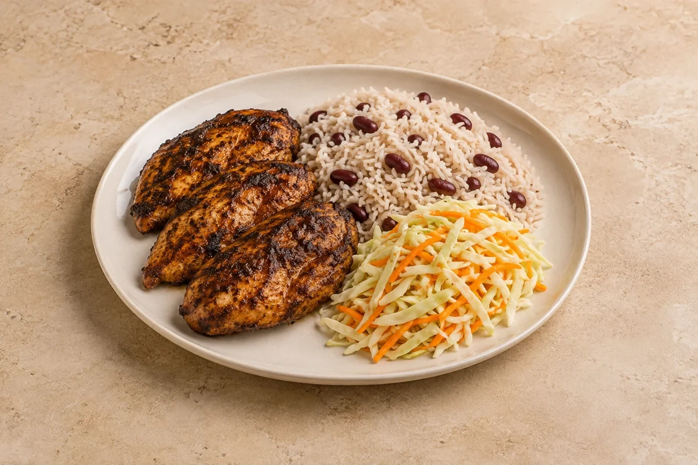

Rice & Bowls
Jerk chicken, coconut rice & peas, lime slaw
Allspice-and-thyme chicken breast with coconut rice and red kidney beans, plus a bright lime-dressed slaw. The fresh jerk paste makes exactly one meal batch.
Estimated total: About 1 hr totalIncludes the 20-minute chicken marinating time. Sides included in the recipe.
people
Ingredient quantities update automatically

Ingredients
Chicken
Single-batch jerk paste
Coconut rice and peas
Lime slaw
Method
Make one batch of jerk paste
Blend or finely mince all the ingredients in the Single-batch jerk paste section together. This is the complete paste for the selected servings; use the whole batch. Coat the chicken breast in the paste, cover and refrigerate for 20 minutes.Prepare the rice pot
Rinse the long-grain rice. Put it in a saucepan with the coconut milk, measured water, drained red kidney beans, garlic, dried thyme, spring onion and salt from the Coconut rice and peas section. Stir once and bring to a gentle simmer.Cook the coconut rice
Cover the pan and cook on the lowest heat for about 15–18 minutes, until the rice is tender and the liquid is absorbed. Check briefly near the end; if the rice is still firm and the pan is dry, add a little boiling water. Remove from the heat and rest, covered, for 10 minutes. Follow the rice packet if it needs a different cooking time.Roast the chicken
Meanwhile, heat the oven to 220°C conventional / 200°C fan. Place the marinated chicken breast and its coating in a small roasting dish. Roast for 20–25 minutes, until browned and the centre reaches 75°C for 30 seconds. Rest on a clean plate for 5 minutes. Discard utensils or marinade contaminated by raw chicken until washed.Make lime slaw
Toss the white cabbage and grated carrot from the Lime slaw section with the lime juice, neutral oil, caster sugar and salt from the same section.Serve
Fluff the coconut rice and peas gently. Slice the jerk chicken breast and serve with the rice and lime slaw. Split all three components between the selected servings.
Tips & leftovers
Storage & leftovers
Store chicken, rice and slaw separately. Cool chicken and refrigerate within 2 hours; use within 48 hours. Cool rice quickly, ideally within 1 hour, refrigerate and use within 24 hours. A combined meal follows the rice’s 24-hour limit.
Freezing
Freeze cooled cooked chicken separately. Freeze rice promptly after rapid cooling. Defrost in the fridge and use within 24 hours. Make slaw fresh.
Reheating
Reheat cooked chicken and rice only once until steaming hot throughout. Add a little water to the rice and stir during reheating. Keep slaw cold.
Substitutions
This accessible version uses chilli flakes; increase them to taste. The “peas” are tinned red kidney beans, so no bean soaking or separate raw-bean cooking is needed.
Keeping leftovers safe
Cool cooked leftovers in small portions and refrigerate within 2 hours. Keep the fridge at 0–5°C and the freezer around −18°C. Freeze suitable leftovers promptly. Defrost fully in the fridge and use within 24 hours. Reheat only once, until steaming hot all the way through. Follow any shorter use-by or opened-pack instructions; using older cooked ingredients does not restart their storage time.
Food-safety guidance: Food Standards Agency: chilling and freezing · reheating leftovers.